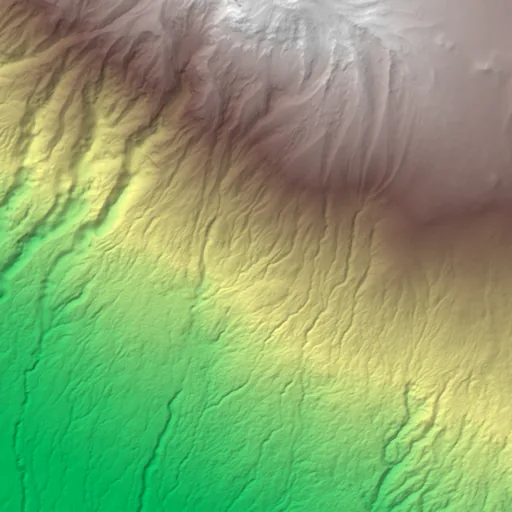

Benchmark / Near-lossless / cop-dem-glo30 / cop-dem-glo30-07
cop-dem-glo30-07
kilimanjaro · 2011-01-01 · sample details
Each point shows a configuration at this budget level. The line shows the best observed trade-offs. The All corpora view pools size and decode time across samples for configurations completed on every corpus with results at this level. Broken promises are listed below.
